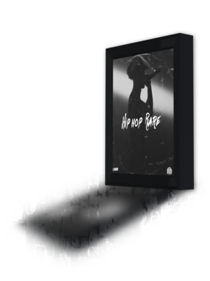

História do L7nnon
Lennon dos Santos Barbosa Frassetti, de 26 anos, foi criado em Realengo, no Rio de Janeiro e construiu uma carreira no Skate, antes de se tornar um dos grandes nomes do rap. Foi com base na sua vivência dentro do skate, viajando o mundo e participando de campeonatos, que resolveu lançar a sua primeira música em 2017 e, desde então, só cresce em números, fãs e projetos mesmo essa não sendo a sua intenção inicial. O rapper já afirmou que, no começo, fazia música apenas por diversão. L7NNON não bebe nem usa qualquer tipo de droga. Ele conta que nunca se permitiu experimentar, já que tinha parentes usuários e sabia que decepcionaria sua família se fizesse algo parecido.
Da primeira track até o "Podium"
A primeira arte do artista foi lançada há 4 anos, mais precisamente no dia 16 de agosto de de 2017 - Mais um Capítulo -, e o primeiro álbum - Podium- veio ao ar no dia 18 de janeiro de 2019. A música com mais views chama-se "Sorrisos" com participação de Lourena, se encontra hoje com cerca de 31 milhões de visualizações. L7nnon foi para a guerra nesse álbum! Como ele mesmo diz em “Já Venci”:Transformou a raiva em rima. Letras fáceis de se captar, potentes iguais os beats e fortes como um cruzado de direita. Uma verdadeira aula de o que é o rap underground no Rio de Janeiro, já que trabalho chama atenção por ser bem direto. Falando bastante de superação, ele faz que o ouvinte sinta como vive um jovem negro numa periferia no Estado. Também chama atenção as brincadeiras que ele faz em algumas músicas com a batida do funk! Nada mais carioca que isso.

O sequestro
À véspera de lançar o primeiro álbum, L7 passou por uma momento delicado. Em entrevista ao UOL, o artista contou uma das experiências mais terríveis de sua vida. Ele foi sequestrado ao estacionar o carro a fim de recarregar o celular. Os seus sequestradores o levaram até a conveniência de um posto de gasolina e um deles o acompanhou até o caixa eletrônico com o objetivo de sacar o dinheiro que o rapper tinha no banco. Em uma interação com o homem que o acompanhava, disse que rimava e mostrou alguns versos de uma canção, que acabou encantando o seu assaltante. A conversa não parou por aí…Eles trocaram algumas palavras sobre arte e música e, em seguida, o sequestrador pediu desculpas a Lennon pela situação.
Acima L7nnon contando com detalhes essa vivência.
Apartamento para a tia
Recentemente o jovem astro compartilhou nas suas redes sociais uma linda surpresa que fez para a sua tia dando para ela de presente um novo apartamento. No vídeo, é claramente visível a alegria de todo mundo que está presente, a maioria familiares do artista. O vídeo tem pouco mais de 11 minutos em suas redes sociais em que ele presenteia sua tia L7nnon diz para ela que alugou um apartamento para viver com sua namorada, Giulia Dantas, no mesmo prédio em que seus avós vivem e a convida para conhecer o imóvel. “A minha maior felicidade é ver que vocês se alegram com a minha vitória e eu podia muito bem comprar um apartamento para mim, agora, porque Deus tem me abençoado, mas ao invés de comprar um apartamento para mim, eu comprei para você”, diz o artista ao entregar as chaves a sua tia. Em seguida, após abraços empolgados, L7nnon se emociona e relembra que pedia trocados para a tia e o avô aos finais de semana.
Hip Hop Rare
O segundo disco de L7nnon conta com 15 faixas, dentre elas alguns clássicos do rapper, como o som “Perdição“, lançado no final do ano passado, que hoje é um dos hits mais tocados no país, com mais de 70 milhões de reproduções só no Youtube. Nos sons do álbum podemos ouvir de tudo um pouco, desde as letras com uma mensagem avançada sobre vida, até seus love songs no melhor estilo L7 e passando também por batidas de funk, trazendo as participações de Hariel e Marks. Além dos funkeiros, o projeto conta com Gaab, Pescadinha, Bolinho e o já experiente e referência na cena, Black Alien. Todas as faixas de “Hip Hop Rare” foram produzidas pelo mestre Papatinho e estão disponíveis em todas as plataformas digitais.
